TGR：从生成范式排序迈向统一生成与推理的工业推荐框架
TGR 技术报告的英文题目是 TGR: Advancing Industrial Recommendation from Generative-Paradigm Ranking toward Unified Generation and Reasoning，作者署名为 TGR Team、Lei Cheng、Haonan Hu 等，主机构为腾讯平台与内容事业群（Tencent Platform and Content Group），于 2026 年 9 月 1 日公开。论文入口为 arXiv:2609.00986。本轮未在论文或 arXiv 元数据中核验到独立官方代码仓库，现阶段可复核的主要公开工件是这份技术报告。它不是把一个模型包装成“全栈”，而是汇总四条已经走到生产验证的模型线：级联内部的 CCFormer、逐物品生成的 BARGE、整页生成的 HiGR，以及把离线推理结果注入生成器的 TGR-Reason。
工业推荐仍被分段优化的检索、粗排、精排与重排链路切开：模型容量增长会饱和，逐阶段截断和逐物品打分损害整页质量，而只依赖共现的 ID 表征在冷启动、长尾和模糊意图上缺少世界知识与推理。
1. 背景和问题
传统工业推荐把一次决策拆成召回、粗排、精排、重排，每一段都有自己设计的 DLRM、训练目标和候选预算。这种架构便于逐段控制风险，却有三个结构问题。第一，高基数稀疏特征、行为序列和候选特征被不同模块处理，模型容量增长并不会像语言模型那样持续换来质量提升；为了控制成本，长历史还经常先被池化、截断或按目标检索，细粒度兴趣在进入排序器前已经丢失。第二，候选集合逐段收缩，每一段只优化局部指标，最终展示列表中的物品依赖、位置效应和多样性只能交给后置规则补救。第三，基于 item ID 共现的模型擅长复现历史模式，却不知道内容语义之外的世界知识；新用户、长尾物品与模糊意图恰恰最缺共现证据。
TGR 对此没有声称一次性撤掉所有级联。它先提出两种部署制度：TGR-GenRank 在级联内把旧 ranker 换成可扩展的 Transformer，仍输出逐候选多任务分数；TGR-GenRec 则直接解码有序 slate，分别探索 next-token prediction 与 next-slate prediction。随后，TGR-Reason 把大模型产生的意图先验变成与推荐器同词表的层级语义 ID，在请求到来前物化，线上只做定长注入和检索。这个“逐段替换、共享表示、列表优先”的路线很务实：每个模型必须在现有过滤、去重和业务规则后面可插拔，离线至少不输 incumbent，并保持同级延迟与 GPU 预算。
生成式推荐自身也不是天然适合推荐。BARGE 指出的第一个问题是 item-boundary gap：一个物品被量化成多层 SID 后，用户历史会被摊平成长 token 序列；同一 codeword 在不同 prefix 下代表不同树节点，但输入 embedding 往往只看 code index 和层级，编码器必须同时猜出哪些 token 属于同一物品、同名 code 在当前 prefix 下是什么意思。第二个问题是 semantic drift：SID 是从粗到细的一条树路径，早期 code 预测错后，正确叶子会从可达子树中消失；扩大 beam 只能线性增加延迟和内存，不能显式判断路径的全局语义是否一致。
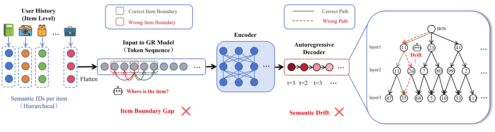
Figure 4 把两类错配拆得很清楚。左侧的两个历史物品各含多层 SID，flatten 后进入普通 encoder，token 仍在但物品分组边界消失；“Where is the item?” 不是排版疑问，而是编码器缺少任务单位这一结构事实。右侧的树说明 prefix 错误为何不可逆：真实目标沿绿色路径位于一棵子树中，一旦中间层选到红色分支，后续即使局部 code 概率很高也只能在错误子树里精细化。BARGE 的 ICA、HPR、DPD 因而不是三项随意叠加的增强：ICA 修复编码侧的任务单位，HPR 在每层判断累计路径是否与用户意图一致，DPD 再用正交语义通道提供不同的可达路径。后文 Table 8 会把这种错误级联量化，而不是只停留在示意图上。
HiGR 面对的是更高一层的错位：即使单个物品能被准确生成，逐物品 NTP 仍需要解码 $M\times D$ 个 SID token，且 token likelihood 并不等于整页的排序、真实兴趣与多样性。TGR-Reason 则面对时间预算错位：显式 CoT 会在每次请求多生成数百 token，latent rollout 虽不输出文字仍要在线多跑若干步；工业推荐的毫秒级路径无法承担这种同步思考。由此，TGR 的研究问题不是“生成模型是否能做推荐”这么宽泛，而是：怎样把语言模型式的可扩展建模、列表级生成和推理先验，分别改造成可在固定候选、固定 beam、固定 GPU 与故障隔离约束下上线的组件。
2. 方法
2.1 TGR Stack：渐进替换、共享结构与列表级目标
符号解释：$O_u$ 是一次请求的完整 slate，$\hat v_{um}$ 是第 $m$ 个展示位置的物品，$F_\theta$ 是端到端生成器。级联内的 CCFormer 不直接实现第二个等式，而是一次前向输出所有候选的多任务分数，由下游组成 $O_u$；BARGE、HiGR 与 TGR-Reason 才直接在共享 SID 空间内解码列表。这个区分很重要，因为报告中的“统一”首先是表示、接口和目标的统一，不等于当前已经只有一个模型。
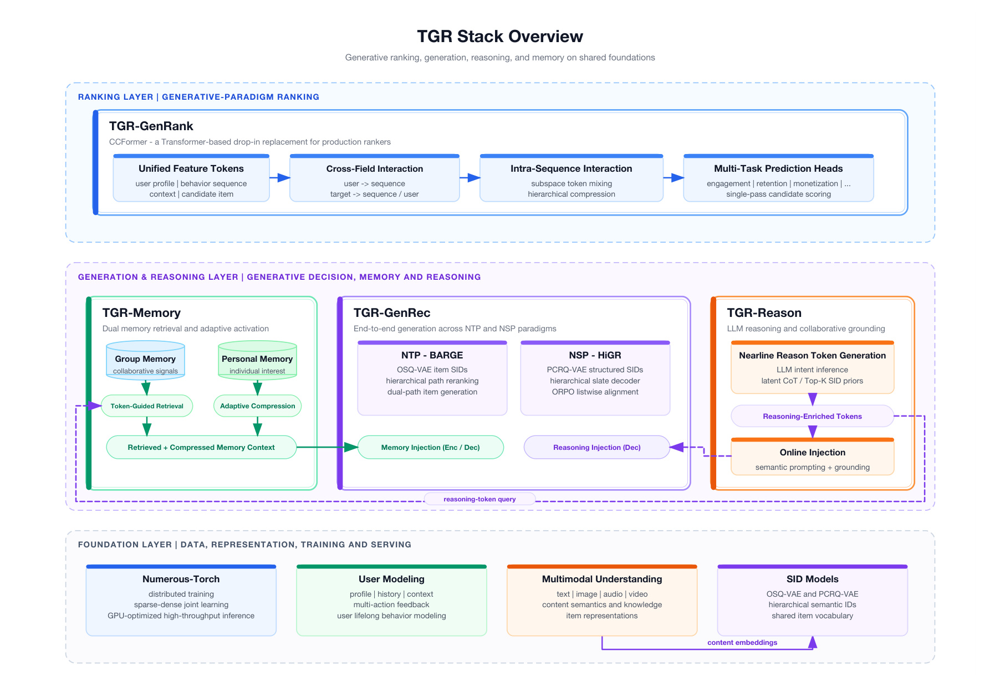
Figure 1 从上到下给出实际分层。ranking layer 中，CCFormer 把用户画像、行为序列和候选特征都 token 化，通过跨字段与序列内交互后接多任务头，保持对参与、留存和变现等目标的兼容。中层把生成、记忆和推理放在一个 SID 接口上：BARGE 负责 NTP 逐物品生成，HiGR 负责 NSP 整页生成，TGR-Reason 的离线 SID 既可直接提示 decoder，也可查询 Group Memory；Personal Memory 则保留用户自己的历史。底层 Numerous-Torch、用户建模、多模态内容理解和 OSQ/PCRQ 两类 tokenizer 是共享基础。图中仍能看到两个 tokenizer 和多个模型头，因此更准确的理解是“可组合的生产栈”，而不是已经训练成单一参数体的推荐基础模型。
2.2 CCFormer：跨字段交互与压缩长序列
CCFormer 把输入分为用户 token $U\in\mathbb{R}^{L_u\times d}$、逐行为 token $S\in\mathbb{R}^{L_s\times d}$、候选 token $T\in\mathbb{R}^{L_t\times d}$。每个 block 只计算 user→sequence、target→sequence、target→user 三条排序真正需要的定向 cross-attention；target 之间互不注意，因而不会发生候选信息泄漏，服务时可把所有候选一次打包，共享用户与历史计算。序列内部则把相邻 $m$ 个行为和 $n$ 个通道组成子空间，以 gated per-channel FFN 做 token mixing，并在每层后用 stride convolution 缩短序列，使浅层保留短期细节、深层以更大感受野提取长期兴趣。相对时间位置权重可概括为：
符号解释：$t_i,t_j$ 是两次行为发生时间，$\alpha,\beta,\gamma$ 为可学习参数；时间差越大，指数衰减通常越强。它只在局部行为组中计算，代价约为 $O(L_sm)$，不是全局 attention bias 的 $O(L_s^2)$。CCFormer 的核心不是用更便宜算子机械替换注意力，而是把“字段间应该看谁”和“序列内如何传播”分成两条次二次复杂度路径。
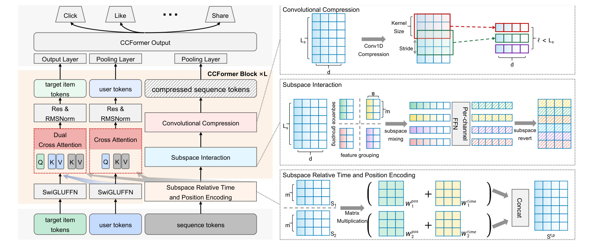
Figure 2 左侧展示 target、user、sequence 三路状态在一个 CCFormer block 内的残差与归一化路径；中间的 Cross Attention 只连必要方向，避免对全部拼接 token 做全局自注意力。右侧把 sequence interaction 展开：行为先按 token/通道分组，在小矩阵中混合，再恢复原形；相对时间和位置编码在子空间内加入，卷积压缩把 $L_s$ 递减后交给下一层。输出端对 target item 和汇聚后的 user/sequence 分别池化，再接 click、like、share 等任务头。训练依赖 BF16/FP16、INT8 稀疏 embedding 与 double hashing；推理端由于 target 只作 query，可单次评分多候选，论文报告即使单样本 FLOPs 更高，峰值 QPS 仍提升 30%。
2.3 BARGE：恢复物品边界并纠正层级语义漂移
BARGE 由三个相互补位的模块组成。ICA 为每个物品用可学习 query 聚合其 $L$ 个 SID token，再通过门控残差把 item context 注回每个 token；门值趋近 0 时退化为恒等路径。HPR 构造第 $l$ 层的累计路径，DPD 则让 OSQ-VAE 用 Householder 参数化旋转把同一 item latent 切成两个正交子空间：
符号解释：$c_j$ 是第 $j$ 层已选择的 codeword，$e_{c_j}$ 是其 embedding，$p^{(l)}$ 表示当前 prefix 的整体语义；$R$ 是可学习旋转，$R^\top R=I$ 由参数化硬保证，无需额外正则。HPR 用双塔比较生成前用户状态 $h_0$ 与 $p^{(l)}$，负样本包括 batch 内路径、NTP 高概率错误 prefix 和可选曝光未点击物品；推理时把兼容分与累计 log-probability 按 $\lambda$ 融合，在 Top-$N$ 池内重排但仍只保留 Top-$B$。两个独立残差码本则得到两条 SID 通道，共享 encoder 后由私有 decoder 与 HPR 打分，再用 soft-OR 合并 item-space 结果。两通道在 Beauty、Sports 的 Top-10 Jaccard 只有 0.183 与 0.172，确实提供互补可达区域。
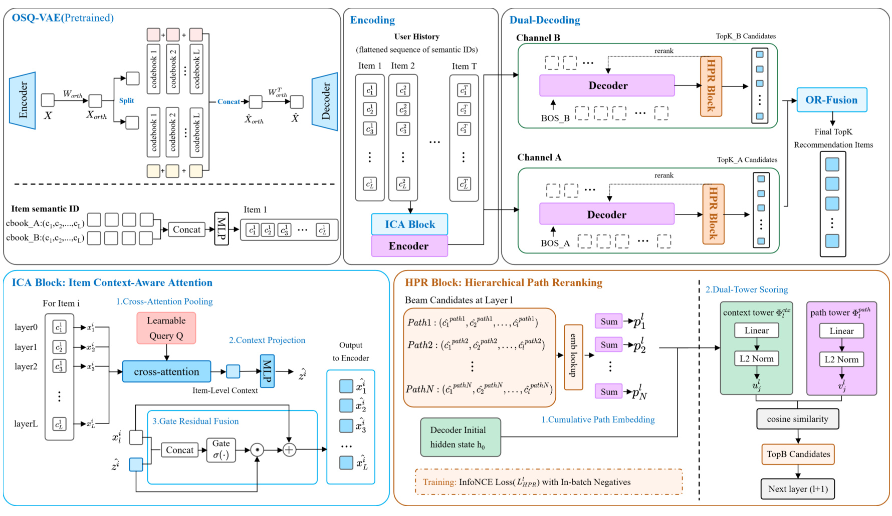
Figure 5 上半部从左到右是 OSQ-VAE 的正交分裂、两组码本、两条 user SID history，以及共享 Transformer encoder 后的双 decoder。ICA 位于 encoder 前，针对的是输入结构；HPR 位于每条 decoder 后，针对的是 prefix 质量；OR-Fusion 在 item space 合并两个 Top-$K$，针对的是路径覆盖。下半部进一步表明 ICA 先对一个物品内部的 code 做 cross-attention 汇聚，再以 gate 分配注入量；HPR 则以 $h_0$ 为 context anchor，对每层累计 path 做 contrastive scoring。模块位置与失败源一一对应，也解释了为何删去任一模块都会降质，而把 beam 简单加宽并不能获得同样修复。
2.4 HiGR：从逐物品 token 生成改为粗到细整页生成
HiGR 先用 PCRQ-VAE 整理离散空间：global quantization 约束聚合 code 与原 latent 对齐，prefix contrastive loss 只拉近前 $D-1$ 层的语义/协同相关物品，叶层不做该约束以保留 item identity。随后 HSD 把生成分成两个尺度：planner 以 $M$ 个 preference embedding 规划整页的全局意图和位置关系，shared item generator 再把每个 preference 落成短的 $D$ 层 SID。训练时还用 intra-list diversity 约束 planner 几何，并从隐式反馈构造 ranking fidelity、genuine interest、diversity 三类整页正负对，以 reference-free ORPO 将列表偏好与 NTP 联合。
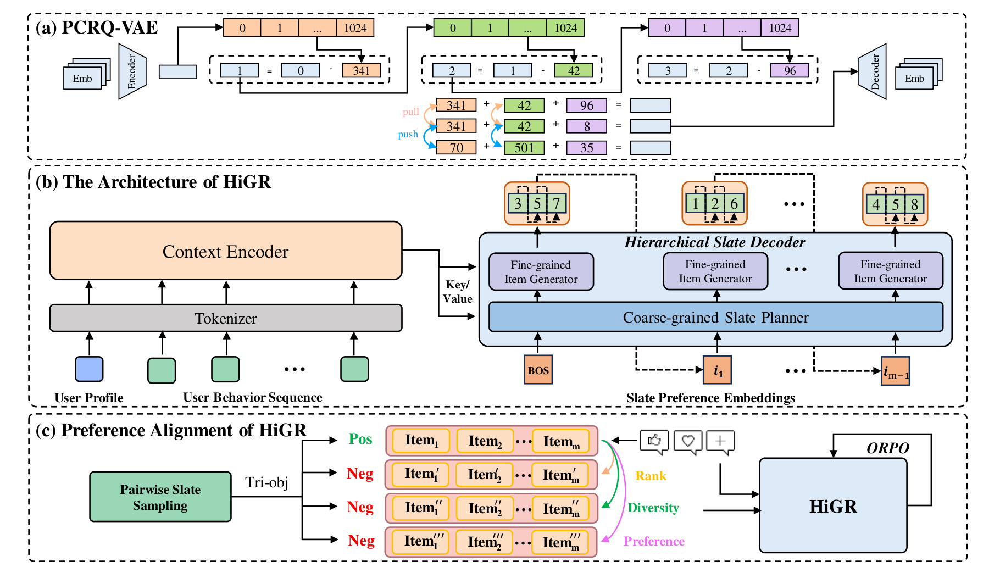
Figure 7 的三块对应三个 disconnect。(a) 中 related item 的前缀 code 被拉近，而最后一层仍可区分具体 item；(b) 中 Context Encoder 只产一次 key/value，Coarse-grained Slate Planner 先生成整页 preference embeddings，多个 Fine-grained Item Generator 实际共享参数并把各位置解成 SID；(c) 中同一正 slate 分别与错序、负反馈物品和低多样性 slate 配对，ORPO 不是把三个逐 item reward 生硬相加，而是直接学习 whole-slate 偏好。这里真正改变的是生成单位：全局列表结构由 planner 决定，beam search 只负责局部 item code。论文把解码复杂度写为：
符号解释：$B$ 是 beam width，$M$ 是 slate 长度，$D$ 是每个物品的 SID 层数，$l_{\mathrm{slate}}$ 与 $l_{\mathrm{item}}$ 分别为 planner 和 item generator 层数，$d$ 是隐藏维。左式让 beam 贯穿整个 $MD$ 序列；右式让全局 planner 贪心运行，只对每个短 item code 做局部 beam。实现还把首个 SID 层的共享 preference 只计算一次，后续 beam prefix 批量前向，并让 cross-attention 的多 beam 共享 ragged user memory。
2.5 TGR-Reason：训练时潜在推理、离线 reason token 与在线注入
TGR-Reason 的 Think model 基于 LatentRec。训练时从历史末 token 的状态 $h_0$ 开始做 $K$ 步单 token latent rollout，并用 Soft Token Selection 把状态投回输入 embedding 流形，再由 Per-step Reasoning Loss 对每一步施加共享预测头监督：
符号解释：$h_k$ 是第 $k$ 步潜在状态，$KV^{(k)}$ 包含历史与前 $k$ 步 cache，$q_k=W_qh_k$；$s_i$ 是 $N=64$ 个词表尺度 soft tokens，$\alpha_i^{(k)}$ 的凸组合让 $e_k$ 回到输入流形；$y$ 是目标 SID 第一层，$T_k$ 逐步下降。Qwen3-1.7B 的 hidden state 范数约为输入 embedding 的 14 倍，直接回馈会使 logits 离开 SID 词表，STS 因而是稳定训练的必要条件。完整目标为 $L=L_{\mathrm{CE}}+\lambda L_{\mathrm{PRL}}$，生产配方用 $K_{train}=2$、$\lambda=0.1$、$T_b=1$、$T_s=5$；收益写入 LoRA adapter 后，离线生成设置 $K=0$ 并精确跳过 CTM。
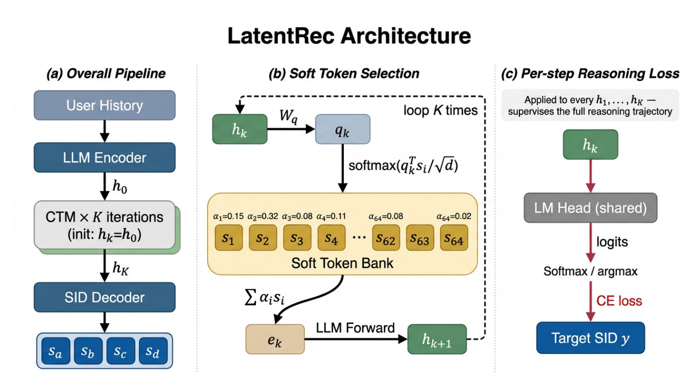
Figure 11 的 (a) 说明用户历史先经 LLM encoder 得到 $h_0$，CTM 只在训练期反复回馈，最终 SID decoder 仍是普通生成头；(b) 展开 STS，$h_k$ 经过 query 后在 64 个 soft token 上做 softmax，再把凸组合 $e_k$ 送回同一 backbone；(c) 表明 PRL 对 $h_1,\ldots,h_K$ 每一步都接共享 LM head，以第一层 SID 为监督。这里不存在新的 reasoning Transformer，新增可训练参数约 2.5M、低于 backbone 的 0.2%。因此“offline reasoning”不是把一条昂贵 CoT 缓存下来，而是先用逐步监督塑形参数，再用普通 SID decoding 周期性产出候选。Think model 为用户输出 $K_r$ 个完整 SID reason tokens，DRI 在第 $l$ 个 codebook 层取出证据集合 $E_u^l$，以 Personal Memory 汇聚得到的 $q_u$ 作 query：
符号解释：$r_{u,k}^l$ 是第 $k$ 个 reason token 的第 $l$ 层 code，$p_0$ 是物品位置 embedding，$\tau_l$ 是层类型 embedding。没有候选顺序编码，因此 reason set 的排列不改变输出；不同层有独立注意力参数，让粗意图 code 与细残差 code 选择不同证据。$z_u^l$ 被插在对应目标 $y_l$ 前，由 causal mask 保证预测时看不到答案，且一次计算后供所有 beam 共享。
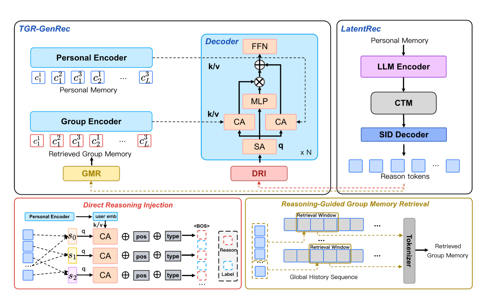
Figure 10 上半部显示 Personal Encoder 与 Group Encoder 都向 TGR-GenRec decoder 提供 key/value，但 reason tokens 还能通过 DRI 直接进入 decoder 输入；下半部把两条路径拆开：DRI 按 SID 层把多个候选重新组织并用个人历史选择，GMR 则用完整 SID 在全局行为序列里检索后继窗口，再把群体证据编码。前者是语义先验，后者是协同事实，两者都不增加输出 SID 的步数。论文评估的默认部署只启用 Personal Encoder + DRI，Table 16 明确排除了 GMR，因此不能把离线与线上增益归因于完整双记忆设计。GMR 对每个 reason token 单独收集群体序列中的后继窗口，保留频率最高的 $M$ 个，再拼接 $C_u=C_{u,1}\Vert\cdots\Vert C_{u,K_r}$。个人与群体记忆由不同 encoder 表示，decoder 第 $l$ 层分别注意二者并用非对称门控融合；Gen model 则保持标准分层 NTP 目标：
符号解释：$a_l^p,a_l^g$ 是个人与群体 memory attention，$d_l$ 是当前 decoder state，门值只调节群体项；$w_l$ 对粗粒度 SID 层给更大权重，$H_u^p$ 是 Personal Memory，$R_u$ 是预计算 reason set。Personal Memory 始终是残差主干，群体噪声可被压低；梯度只更新生成器、DRI、Group Encoder 与门控，不回传到 nearline Think model。训练时推理与线上生成由固定工件隔开，是 TGR-Reason 能部署的决定性边界。
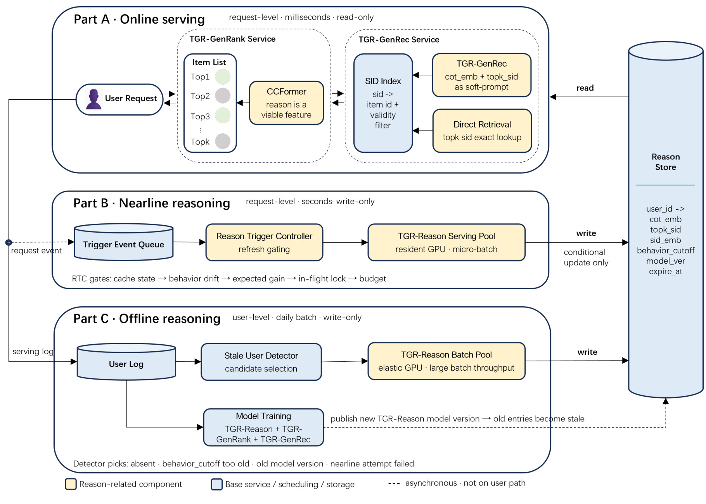
Figure 12 把这一边界落到系统层。Part A 的在线服务只读：请求并行读取常规特征与 Reason Store，校验模型、特征、SID 码本版本和 TTL 后，分别走生成注入与 SID exact lookup；记录缺失或不兼容时回退到 no-Reason 生成，当前请求不被阻塞。Part B 的 nearline 路径由请求异步发 trigger，RTC 依据新鲜度、行为变化、预计增益、冷却与 GPU 预算决定是否刷新，条件写回仅供后续请求。Part C 每日找缺失、过期、失败或版本不兼容用户做大批 backfill，模型约每周重训。写入按 behavior cutoff 而不是完成时间排序，防止晚结束的旧数据覆盖更鲜记录。该设计把“推理新鲜度”变成可降级预算，而非线上可用性的硬依赖。
3. 实验结果
3.1 CCFormer：质量、扩展性、消融与线上收益
CCFormer 的公共集使用 Taobao、KuaiRec，行为长度 200；工业集来自腾讯一个月日志，超过 40 亿样本、3000 万用户、1000 万物品，序列长 1000。基线覆盖 DIN、DeepFM、SASRec、MIMN、HSTU、OneTrans、STCA，每个方法独立做 TPE 超参搜索；AUC/GAUC 的相对增益使用 RelaImpr 口径，不能把表中的百分点直接理解成点击率提升。
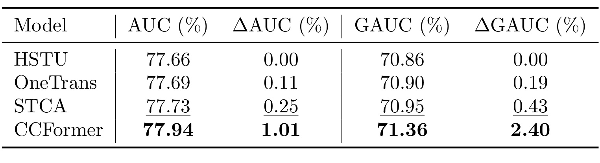
Table 3 中，CCFormer 的 AUC 为 77.94%、GAUC 为 71.36%，相对 HSTU 的 RelaImpr 分别为 1.01% 与 2.40%；绝对差是 0.28 与 0.50 个百分点。OneTrans、STCA 也略胜 HSTU，但 CCFormer 仍分别超过最强的 STCA 0.21 与 0.41 个百分点。工业 AUC 的小幅移动可能有部署价值，不过表内没有给置信区间；报告用统一硬件软件栈和同类生产基线增强公平性，却仍受私有数据、特征工程和采样口径不可复现的限制。公共集 Table 2 同样显示它在 Taobao、KuaiRec 达到 93.67% 与 83.35% AUC，说明收益不是只来自一个内部场景。GAUC 的相对增幅明显大于 AUC，也提示改进更可能集中在用户内排序而非仅由总体样本分布推动，复现时应保留两种指标。
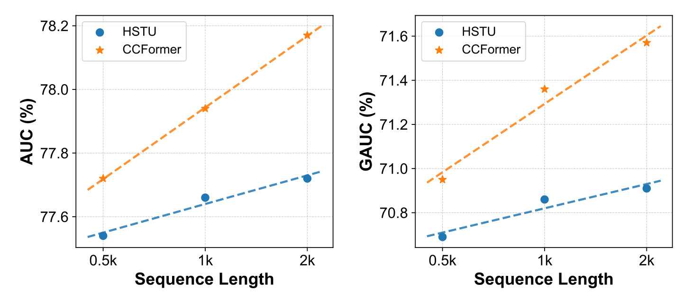
Figure 3 的横轴是 0.5k、1k、2k 历史长度，左右分别为 AUC 与 GAUC。CCFormer 两条橙线都随长度单调上升，AUC 从 77.72% 到 78.17%，GAUC 从 70.95% 到 71.57%；HSTU 也改善，但斜率和最终值较低。值得注意的是，CCFormer 用 0.5k token 已大致匹配 HSTU 的 2k AUC，并超过其 2k GAUC，这更接近“历史利用效率”而不只是模型更大。图只覆盖三个长度点，足以显示局部可预测趋势，却不能外推为任意长度都维持同一 scaling slope；线上可用长度还取决于压缩核、显存和时延预算。两条子图中 CCFormer 与 HSTU 的间距都随长度扩大，这与层级压缩让深层仍覆盖全历史的设计预期相符，但不能替代模块消融。
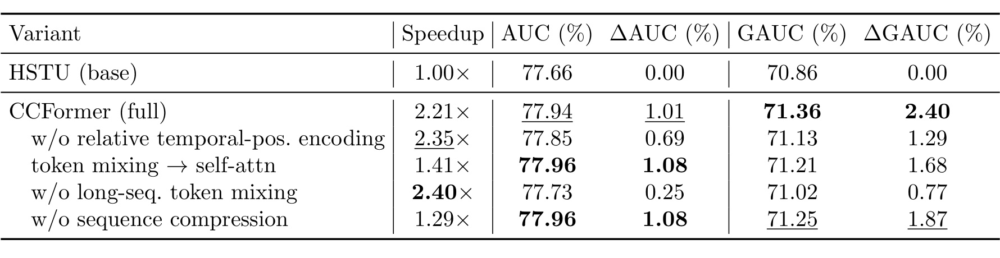
Table 5 把质量与速度来源分开。完整模型吞吐为 HSTU 的 2.21 倍；去掉 sequence compression 后 AUC 甚至微升到 77.96%，但吞吐降到 1.29 倍，说明压缩主要是效率杠杆。去掉 long-sequence token mixing，AUC/GAUC 降至 77.73/71.02，是最明显的质量损失；改回 self-attention 的 AUC 77.96 略高，却使 GAUC 低于完整模型且吞吐只有 1.41 倍，支持“全局注意力不划算”而不是“注意力绝对无效”。去掉时间位置编码后 GAUC 从 71.36 降至 71.13，表明新旧行为区分确有贡献。消融均在同一内部数据栈完成，但没有多随机种子方差，微小差值仍需谨慎。
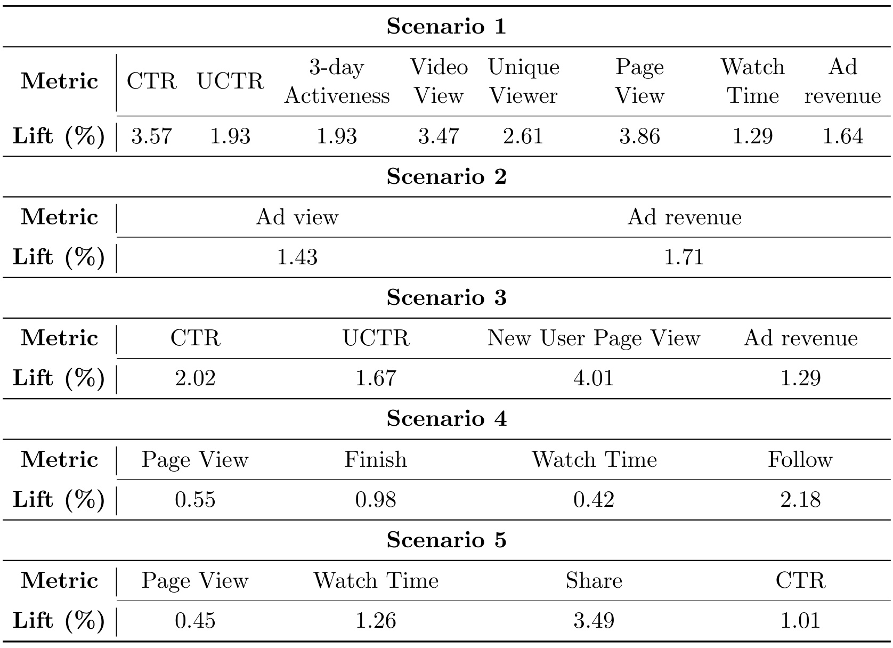
Table 6 汇总五个不同 incumbent 的两周实验，每组每天超过 100 万曝光用户，作者称 two-sample t-test 均有 $p<0.05$。场景 1 替换长期迭代 DLRM，CTR +3.57%、视频播放 +3.47%、观看时长 +1.29%、广告收入 +1.64%；场景 2-5 多数替换 HSTU，分别在广告收入、CTR、新用户 PV、完播、关注、分享等不同指标上提升。场景 1 与 2 后续全量，场景 2 广告收入 +1.71%。表中没有展示绝对基线、实验方差、多重检验校正或流量比例，因此“全部显著”不能推导为跨场景效应同等稳定；它能支持的是 CCFormer 已跨视频、内容流与广告排序接受真实流量检验。尤其是收入、观看和互动指标并不共享分母，不能用 lift 大小给五个场景排序。
3.2 BARGE：结构修复、工业收益与通道价值
BARGE 先在 Amazon Beauty 用 TIGER 做错误诊断，再在 Beauty、Sports 做 full-catalog leave-one-out，对照生成式与判别式基线；工业评估包含两个规模和 incumbent 都不同的腾讯商业媒体场景。其生产约束是参数、beam 与 serving latency 不增加，所以结果必须同时看 Hit@K、模块诊断和成本。
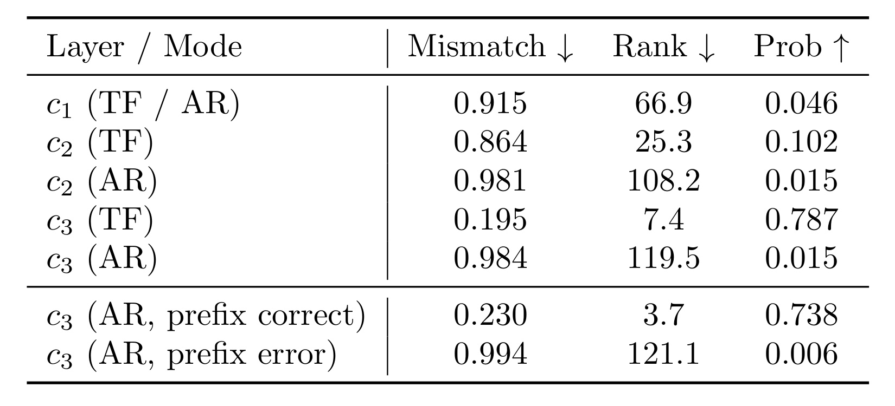
Table 8 对同一目标比较 teacher forcing 与 autoregressive decoding。c3 在 TF 下目标概率为 0.787、rank 7.4；AR 下概率跌到 0.015、rank 119.5。更有诊断力的是最后两行：prefix 正确时 c3 mismatch 0.230、概率 0.738；prefix 错误时 mismatch 0.994、概率 0.006，准确率差异在正文被概括为 77.0% 对 0.6%。这说明深层 code 的失败很大部分来自前面把路径带入错误子树，而不是 c3 本身分类困难。该证据来自 TIGER、Beauty 和 greedy decoding，是否在所有码本与 beam 设置上保持同等幅度仍未证明，但足以为 HPR 的 prefix-aware 训练提供针对性动机。
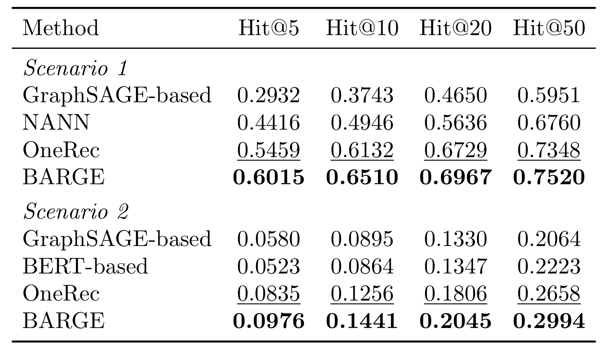
Table 10 中，场景 1 的最强基线 OneRec 在 Hit@5/10/20/50 为 0.5459/0.6132/0.6729/0.7348，BARGE 提升到 0.6015/0.6510/0.6967/0.7520，头部相对增益约 10.2%。场景 2 的候选物品达千万级、交互达百亿级，BARGE 的 Hit@5 从 OneRec 的 0.0835 增至 0.0976，相对 +16.9%，到 Hit@50 仍从 0.2658 增至 0.2994。随 cutoff 变大增益收窄但未消失，符合 HPR 主要修正浅层路径、DPD 补充可达区域的预期。OneRec 是团队按公开描述复现而非原生产实现，这是对比可信度的重要限制。两场景绝对 Hit 水平差异很大，说明语料与任务难度不同，跨场景比较只能看各自对照内的相对方向。
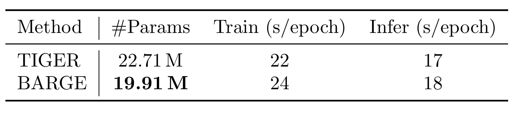
Table 11 在 Amazon Beauty 相同配置下显示，BARGE 只有 19.91M 参数，低于 TIGER 的 22.71M；每 epoch 训练时间从 22 秒增到 24 秒，推理从 17 秒增到 18 秒，均低于 10% 增幅。论文通过把 encoder 从 4 层减到 2 层，吸收 ICA、HPR 和双 decoder 的参数；双路共享 encoder 并并行运行。这里的“zero marginal serving cost”是相对生产配额与模型重构后的结论，不表示计算严格为零。更稳妥的工程复现应同时记录 GPU 利用率、batch、beam、Top-$N$ rerank pool 和尾延迟，而不能只用参数量判断双路径是否免费。表中是每 epoch 时间，不等于单请求时延；它主要排除训练/离线推理开销数量级暴涨。
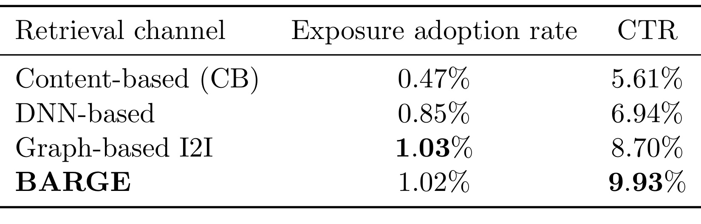
Table 12 不再比较离线 Hit，而是把每个 retrieval channel 提交的候选经过后续级联后，有多少被采纳曝光，以及曝光后的 CTR。BARGE adoption rate 为 1.02%，几乎等于 Graph-based I2I 的 1.03%，但 CTR 为 9.93%，高于后者 8.70%、DNN 6.94% 和内容召回 5.61%。这表明其候选既能通过下游过滤，曝光后也有较高点击转化。另一个两周 6% 流量实验相对 incumbent 报告 CTR +0.60%、独立点击用户 +1.34%、总阅读时长 +1.70%，全量后留有 holdback。通道 CTR 会受配额、候选位置与下游 ranker 选择偏差影响，不能把 9.93% 与最终系统 CTR 直接等同。
3.3 HiGR：整页质量、扩展性、效率与线上结果
HiGR 在 KuaiRec 构造 chronological sequence 并采用 leave-five-out；内部数据有 10 亿预训练样本，其中 3% 用于 ORPO。指标把曝光恢复与 Effective View 分开，各自报告 Hit@5、Recall@5，并以 NDCG@5 判断排序；ILD 用于多样性。对照包括 ListCVAE、BERT4Rec、SASRec、TIGER、HSTU 和 OneRec。
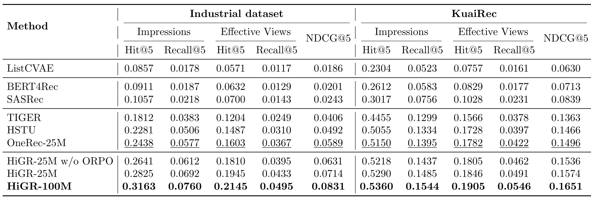
Table 13 的十列防止只看一个指标。工业集同为 25M 参数时，OneRec 的 Impression Hit@5、Effective-View Hit@5、NDCG@5 分别为 0.2438、0.1603、0.0589，HiGR-25M 达 0.2825、0.1945、0.0714，相对提升 15.9%、21.3%、21.2%。不做 ORPO 的 HiGR-25M 已为 0.2641、0.1810、0.0631，说明 tokenizer 与 HSD 本身有贡献；ORPO 再提高所有指标。HiGR-100M 的工业 NDCG@5 达 0.0831，较 OneRec-25M +41.1%。但 100M 与 25M 的比较混合了架构和容量，不能用来单独估算 ORPO 效果。
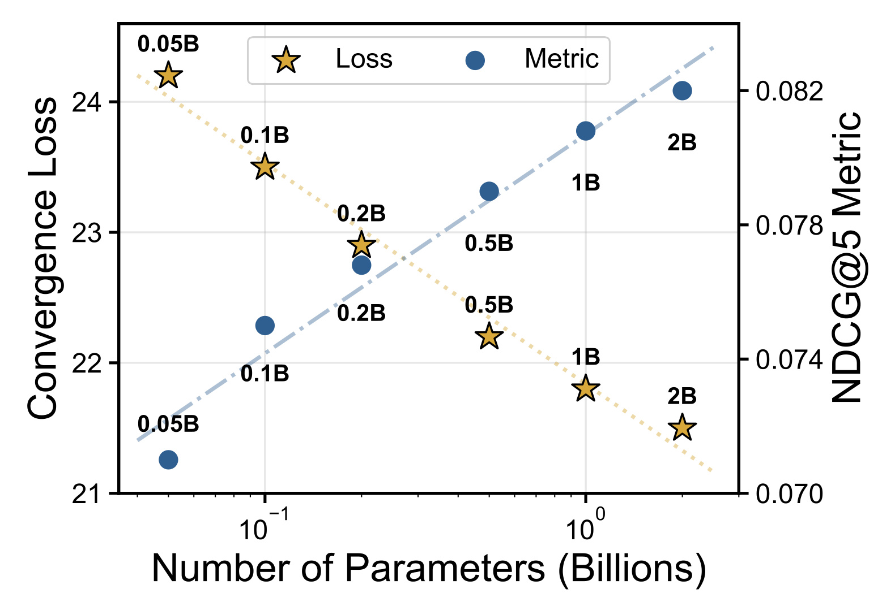
Figure 8 把 0.05B 到 2B 的参数量放在对数横轴，星标的 convergence loss 随容量下降，圆点 NDCG@5 随容量上升，两条拟合线在所测区间近似幂律。它支持 HiGR 不只在 25M/100M 两点上偶然改善，也说明把整页设为生成单位没有破坏容量扩展趋势。不过只有六个容量点，训练数据、算力与超参是否等比例控制需要原实验进一步核验；论文未来工作也明确要超出 2B。对线上团队更实际的问题不是继续加参数本身，而是单位 GPU 和 P99 预算下曲线斜率是否仍优于 OneRec-style decoder。图中的 0.2B、0.5B、1B、2B 两类标记沿拟合方向同步移动，至少排除了只有最小模型或单个随机点驱动趋势的直观疑虑。
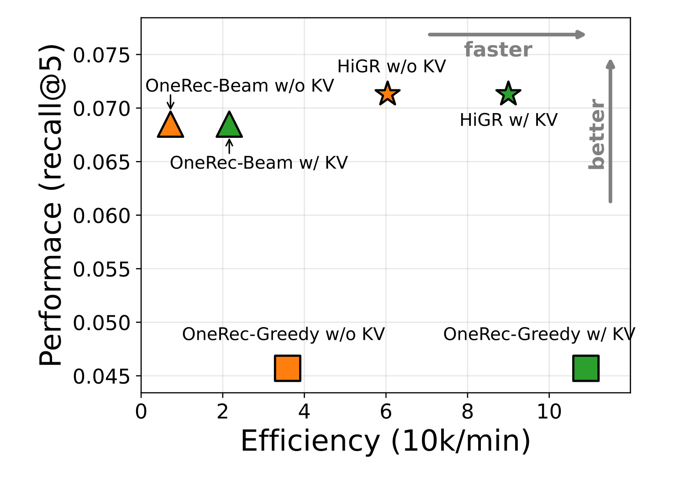
Figure 9 横轴是效率（每分钟万条），纵轴是 Recall@5；越右越快、越上越好。OneRec greedy 虽快但落在约 0.045 的低质量区，beam search 提升到约 0.068，却靠左；HiGR 无 KV 已同时高于并显著快于 OneRec beam，有 KV 后位于更靠右的高质量区域。正文给出无 KV 条件超过 5 倍加速并提升 Recall@5 超过 5%，生产服务 P99 低于 50ms、同吞吐 GPU 需求约降 60%。图没有提供误差条和硬件明细，Pareto 位置应在相同实现栈内解读；它仍清楚证明层级 planner 并非用 greedy 牺牲质量换速度。有无 KV 的相对位置还说明缓存不是唯一收益源：即使双方都关闭缓存，分层解码仍保有结构优势。
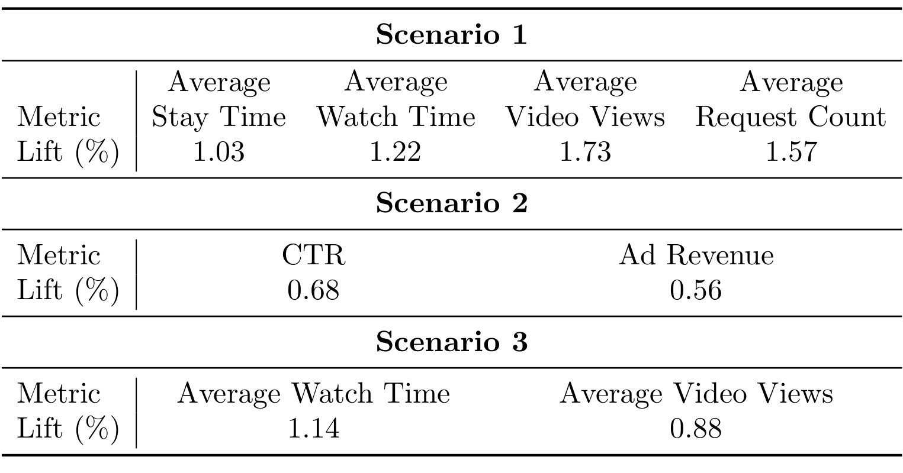
Table 14 的三个场景指标不同。5% 流量的场景 1 中，平均停留 +1.03%、观看时长 +1.22%、播放数 +1.73%、请求数 +1.57%；场景 2 的 CTR +0.68%、广告收入 +0.56%；场景 3 的观看时长 +1.14%、播放数 +0.88%。这些结果说明整页生成跨参与、消费和商业目标都有正向信号，却没有披露测试周期、置信区间和每场景 incumbent，也未说明所有项目是否经过同样显著性检验。因此可确认的是多平台生产评估与一致方向，不能把最大 +1.73% 作为 HiGR 的通用线上收益承诺。场景 1 同时提升请求数和单次消费指标，方向上排除了只靠增加请求频次拉高总观看的单一解释，但仍缺绝对量拆分；场景 2 的收入增益则至少与点击改善同向。
3.4 TGR-Reason：冷启动收益与线上转化
TGR-Reason 的离线对照使用已部署 TGR-GenRec，在三个测试日期等权平均，按全推荐流量、主推荐流量、主推荐冷启动用户逐层收窄 cohort。默认配置只含 Personal Encoder + DRI，明确排除 GMR；所以这组实验验证的是 reason-token 直接注入，而不是 Figure 10 中完整记忆扩展。
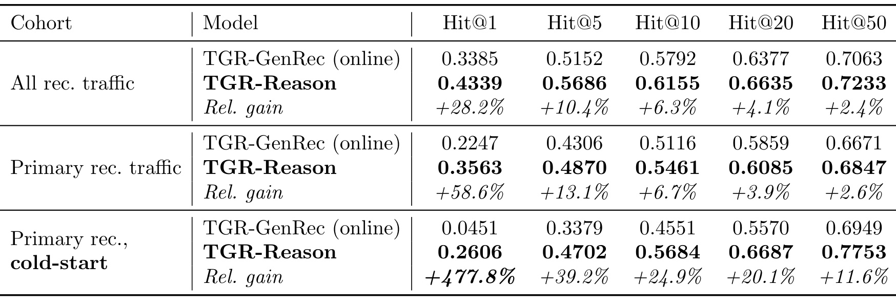
Table 16 显示收益越靠列表头部、用户历史越稀疏越大。全流量 Hit@1 从 0.3385 到 0.4339，相对 +28.2%，Hit@50 仅 +2.4%；主推荐流量 Hit@1 相对 +58.6%。冷启动用户最突出：Hit@1 从 0.0451 到 0.2606，绝对 +0.2155、相对 +477.8%；Hit@5/10/20/50 仍有 +39.2%/+24.9%/+20.1%/+11.6%。这与 reason prior 缩小粗层搜索空间的机制一致，也说明巨大的相对值部分来自很低的 0.0451 基线。表未给 cohort 样本量和方差，不能据此判断所有新用户子群都同样受益。三天等权平均也可能放大低流量日期的权重，按样本加权结果需另行核验。
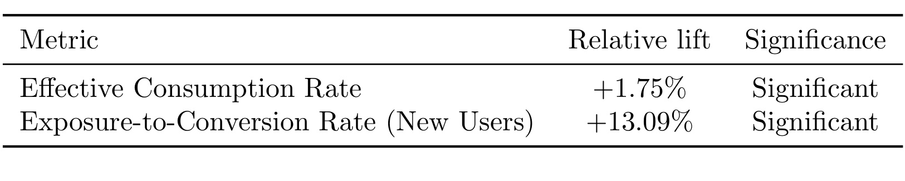
Table 17 把离线命中改善落到用户价值：相对 incumbent，Effective Consumption Rate +1.75%，新用户 Exposure-to-Conversion Rate +13.09%，两项均标为显著。新用户转化的更大幅度与 Table 16 的冷启动梯度方向一致，说明 reason SID 在个人历史不足时更有边际价值；有效消费提升则表明它不只是把某个离线目标推到 Top-1。仍需注意，论文没有公开绝对基线、实验周期、流量比例、显著性检验形式和 DRI 额外线上耗时；而 nearline/offline 物化成本也未计入请求延迟，因此该表验证效果方向，不足以独立完成总成本核算。两项指标都来自同一平台，但分母不同，13.09% 不能与 1.75% 直接比较效应强弱。
4. 总结
4.1 我的判断与迁移启发
TGR 最值得借鉴的不是“用生成模型替换推荐”这一口号，而是把四类技术分别绑定到可验收的生产约束：CCFormer 证明长序列 scaling 必须同时改 interaction graph 和共享候选计算；BARGE 把 SID 错误拆成编码边界与解码路径问题，并在固定 beam 下修复；HiGR 把列表目标前移到 tokenizer、decoder 和 post-training；TGR-Reason 则用共享 SID 把大模型意图变成可版本化、可过期、可回退的离线工件。对推荐工程而言，这提示召回、排序和重排可先统一表示与用户编码，再逐步统一决策。对个性化 LLM/RAG 而言，DRI/GMR 也提供一种思路：把昂贵推理结果编译成结构化查询和 soft prompt，由个人记忆作主干、群体记忆门控补充，而不是每次在线重新生成长解释。
4.2 局限、复现检查与后续跟进
至少有四项边界需要保留。第一，TGR 仍是多个耦合模型，BARGE 与 HiGR 使用不同 tokenizer，CCFormer 也仍依赖级联；“统一生成与推理”是演进方向而非已完成事实。第二，大多数工业数据、特征、incumbent 和系统参数不公开，OneRec 工业对照还是团队复现，外部只能验证公共集和模块原理。第三，线上表分属不同产品、流量和指标，显著性、方差与多重检验细节不完整，数字不可跨表相加。第四，TGR-Reason 的推理被摊销而非消失：Reason Store、每日刷新、每周重训、版本迁移都有总拥有成本，且 session 内突发意图可能早于 nearline 更新。第五，论文展示的新用户冷启动收益不等于新物品冷启动；新 item 的 SID 前缀仍缺协同关系。第六，HiGR 的 ORPO 三目标权重对所有用户统一，可能掩盖个体对相关性与多样性的差异。
后续复现可以按三步推进。其一，先在公开序列数据上复现 BARGE 的 Table 8 诊断，按 prefix correctness 分桶，而不是只比较最终 Recall；若深层崩溃不随 prefix 变化，HPR 的收益来源就需要重查。其二，用相同候选数、beam、KV cache、硬件和 P99 预算对比 flat slate decoder 与 HSD，同时报告训练吞吐、峰值显存和质量，避免只复现 Figure 9 的平均吞吐。其三，做 TGR-Reason 的严格增量消融：no Reason、DRI、GMR、DRI+GMR 分开，按冷/暖/热用户报告绝对值、刷新成本、store miss、过期率与回退率。还应持续跟踪官方代码或各子论文实现是否公开，以及未来版本是否真正统一 tokenizer、引入按请求选择的 $K>0$ 推理，并给出更完整的在线统计口径。